pdhg¶
-
odl.solvers.nonsmooth.primal_dual_hybrid_gradient.pdhg(x, f, g, L, niter, tau=None, sigma=None, \*\*kwargs)[source]¶ Primal-dual hybrid gradient algorithm for convex optimization.
First order primal-dual hybrid-gradient method for non-smooth convex optimization problems with known saddle-point structure. The primal formulation of the general problem is
min_{x in X} f(x) + g(L x)
where
Lis an operator andfandgare functionals.The primal-dual hybrid-gradient algorithm is a primal-dual algorithm, and basically consists of alternating a gradient ascent in the dual variable and a gradient descent in the primal variable. The proximal operator is used to generate a ascent direction for the convex conjugate of F and descent direction for G. Additionally an over-relaxation of the primal variable is performed.
- Parameters
- x
L.domainelement Starting point of the iteration, updated in-place.
- f
Functional The function
fin the problem definition. Needs to havef.proximal.- g
Functional The function
gin the problem definition. Needs to haveg.convex_conj.proximal.- Llinear
Operator The linear operator that should be applied before
g. Its range must match the domain ofgand its domain must match the domain off.- niternon-negative int
Number of iterations.
- taufloat, optional
Step size parameter for
g. Default: Sufficient for convergence, seepdhg_stepsize.- sigmasequence of floats, optional
Step size parameters for
f. Default: Sufficient for convergence, seepdhg_stepsize.
- x
- Other Parameters
- callbackcallable, optional
Function called with the current iterate after each iteration.
- thetafloat, optional
Relaxation parameter, required to fulfill
0 <= theta <= 1. Default: 1- gamma_primalnon-negative float, optional
Acceleration parameter. If not
None, it overridesthetaand causes variable relaxation parameter and step sizes to be used, withtauandsigmaas initial values. Requiresfto be strongly convex andgamma_primalbeing upper bounded by the strong convexity constant off. Acceleration can either be done on the primal part or the dual part but not on both simultaneously. Default:None- gamma_dualnon-negative float, optional
Acceleration parameter as
gamma_primalbut for dual variable. Requiresg^*to be strongly convex andgamma_dualbeing upper bounded by the strong convexity constant off^*. Acceleration can either be done on the primal part or the dual part but not on both simultaneously. Default:None- x_relax
op.domainelement, optional Required to resume iteration. For
None, a copy of the primal variablexis used. Default:None- y
op.rangeelement, optional Required to resume iteration. For
None,op.range.zero()is used. Default:None
See also
odl.solvers.nonsmooth.douglas_rachford.douglas_rachford_pdSolver for similar problems which can additionaly handle infimal convolutions and multiple forward operators.
odl.solvers.nonsmooth.forward_backward.forward_backward_pdSolver for similar problems which can additionaly handle infimal convolutions, multiple forward operators and a differentiable term.
Notes
The problem of interest is
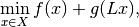
where the formal conditions are that
 is an operator
between Hilbert spaces
is an operator
between Hilbert spaces  and 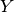.
Further, 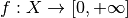 and
are proper, convex,
lower-semicontinuous functionals.
and 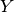.
Further, 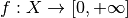 and
are proper, convex,
lower-semicontinuous functionals.Convergence is only guaranteed if
is linear, 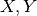
are finite dimensional and the step lengths  and
and
 satisfy
satisfy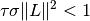
where 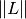 is the operator norm of
.It is often of interest to study problems that involve several operators, for example the classical TV regularized problem
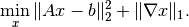
Here it is tempting to let 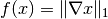, 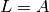 and 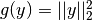. This is however not feasible since the proximal of 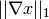 has no closed form expression.
Instead, the problem can be formulated 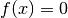, 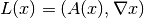 and 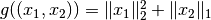. See the examples folder for more information on how to do this.
For a more detailed documentation see the PDHG guide in the online documentation.
References on the algorithm can be found in [CP2011a] and [CP2011b].
This implementation of the CP algorithm is along the lines of [Sid+2012].
The non-linear case is analyzed in [Val2014].
References
[CP2011a] Chambolle, A and Pock, T. A First-Order Primal-Dual Algorithm for Convex Problems with Applications to Imaging. Journal of Mathematical Imaging and Vision, 40 (2011), pp 120-145.
[CP2011b] Chambolle, A and Pock, T. Diagonal preconditioning for first order primal-dual algorithms in convex optimization. 2011 IEEE International Conference on Computer Vision (ICCV), 2011, pp 1762-1769.
[Sid+2012] Sidky, E Y, Jorgensen, J H, and Pan, X. Convex optimization problem prototyping for image reconstruction in computed tomography with the Chambolle-Pock algorithm. Physics in Medicine and Biology, 57 (2012), pp 3065-3091.
[Val2014] Valkonen, T. A primal-dual hybrid gradient method for non-linear operators with applications to MRI. Inverse Problems, 30 (2014).